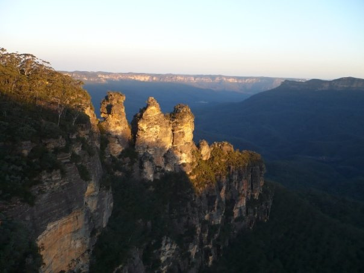

Caroline Fromont
ABOUT ME
I am broadly interested in insect diversity, distribution and nutrition. What fascinates me is to
understand species distribution using a wide range of complementary approaches ranging from
molecular biology with population genetics to insect physiology with a little hint of behaviour!
I am currently doing a PhD at the Hawkesbury Institute for the Environment with James Cook and
Markus Riegler. During my master, I worked at the University of Sydney with Fleur Ponton and Steve
Simpson in 2009 and at ICIPE with Pascal Campagne and Bruno Le Ru in 2011. I also worked at INRA
in collaboration with Ynsect with Frederic Marion-Poll and Antoine Hubert.

Hawkesbury Institute for the environment | PhD

INRA/Ynsect | Master
2012